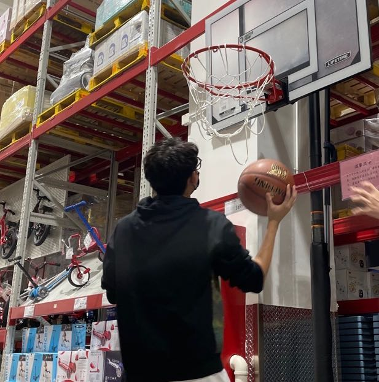
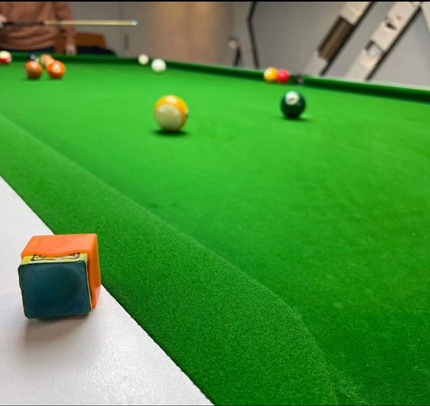

Wenyi Zhang (Morty)
ABOUT
Hi! I am a first-year Ph.D. Student in CSE at the University of California, San Diego, advised by Prof. Aaron Schulman.
I'm also honored to work closely with Prof. Dinesh Bharadia, Prof. Nadia Heninger, and Prof. Dave Levin .
Before that, I was a visiting student in the NetSAIL Lab & EECS at the University of California, Irvine, advised by Prof. Sangeetha Abdu Jyothi.
I got the B.E. in Computer Engineering from The Chinese University of Hong Kong, Shenzhen, worked in INML Lab, advised by Prof. Fangxin Wang.
My research interests lie at the intersection of computer systems, wireless & networking, satellite network, and machine learning.
NEWS
- [02/05/2025] We are happy to share that our “Don't Look Up” team was named Finalists for the Research Impact Award at the Third Annual Cyber Policy Awards.
- [10/13/2025] Our research on GEO satellite security was featured as a top story on the front page of WIRED by Andy Greenberg and Matt Burgess, and it also reached the #1 spot on Hacker News. We are also honored that this work received the 2025 ACM CCS Distinguished Paper Award 🏆.
- [07/01/2025] Our Paper "Don't Look Up: There Are Sensitive Internal Links in the Clear on GEO Satellites." is accepted by ACM CCS '25, see yall in Taipei!🎉
- [05/02/2025] Our paper on Multimodal Federated Learning got accepted by IEEE Transactions on Mobile Computing.
- [03/11/2025] Invited Talk at IETF 122 Bangkok about "A Deep Dive into LEO Satellite Topology Design Parameters."🎉
- [11/14/2024] Our paper on LEO Satellite Networks got accepted at PAM '25! 🎉
- [09/04/2024] Two papers got accepted by LEO-NET '24 (Co-located with MobiCom'24).
- [08/27/2024] Our paper on Privacy-Preserving Gaze-Assisted Immersive Video Streaming got accepted by IEEE Transactions on Mobile Computing.
PUBLICATION & PREPRINTS
[ACM CCS '25]
Don't Look Up: There Are Sensitive Internal Links in the Clear on GEO Satellites.
[Web]
[PDF]
[Code]
[Media]
Wenyi Morty Zhang, Annie Dai, Keegan Ryan, Dave Levin, Nadia Heninger, Aaron Schulman.
the 32nd ACM Conference on Computer and Communications Security (CCS-25)
[Preprint]
SpyDir: Spy Device Localization Through Accurate Direction Finding.
[PDF]
Wenhao Chen, Wenyi Morty Zhang, Wei Sun, Dinesh Bharadia, Roshan Ayyalasomayajula.
Preprint
[TMC '25]
Unimodal Training-Multimodal Prediction: Cross-modal Federated Learning with Hierarchical Aggregation.
[PDF]
Rongyu Zhang, Xiaowei Chi, Wenyi Zhang, Guiliang Liu, Yuan Du, Fangxin Wang.
IEEE Transactions on Mobile Computing (TMC)
[PAM '25]
A Deep Dive into LEO Satellite Topology Design Parameters.
[PDF]
Wenyi Morty Zhang*, Zihan Xu*, Sangeetha Abdu Jyothi.
the 26th Annual Passive and Active Measurement Conference. (PAM-25)
[LEO-NET '24]
An In-Depth Investigation of LEO Satellite Topology Design Parameters.
[PDF]
Wenyi Zhang*, Zihan Xu*, Sangeetha Abdu Jyothi.
2024 ACM Workshop on LEO Networking and Communication, collocated with Mobicom' 24 (LEO-NET-24)
[LEO-NET '24]
LEO Satellite Network Resilience Analysis: A Focus on Critical Satellites.
[PDF]
Zhuoyuan Li*, Wenyi Morty Zhang*, Wenhao Chen, Yiyan Hu, Weyl Lu.
2024 ACM Workshop on LEO Networking and Communication, collocated with Mobicom' 24 (LEO-NET-24)
[TMC '24]
Privacy-Preserving Gaze-Assisted Immersive Video Streaming.
[PDF]
Yilin Jin, Wenyi Zhang, Zihan Xu, Junhua Liu, Fangxin Wang, Shuguang Cui.
IEEE Transactions on Mobile Computing (TMC)
[IoTJ '23]
Proffler: Towards Collaborative and Scalable Edge-Assisted Crowdsourced Livecast.
[PDF]
Wenyi Zhang*, Zihan Xu*, Fangxin Wang, Jiangchuan Liu.
IEEE Internet of Things Journal (IoTJ)
[VR '23]
CaV3: Cache-assisted Viewport Adaptive Volumetric Video Streaming.
[PDF]
Junhua Liu, Boxiang Zhu, Fangxin Wang, Yili Jin, Wenyi Zhang, Zihan Xu, Shuguang Cui.
the 30th IEEE Conference on Virtual Reality and 3D User Interfaces (VR-23)
EDUCATION
Ph.D. Student in CSE, University of California, San Diego.
September 2025 - Now
M.S. in ECE, University of California, San Diego.
September 2023 - June 2025
Visiting student in EECS, University of California, Irvine.
September 2022 - June 2023
B.E. in ECE, The Chinese University of Hong Kong, Shenzhen.
September 2019 - June 2023
EXPERIENCES
---------------- Oct. 2023 - Present
NetSAIL Lab at UC Irvine
---------------------------------------- Sep. 2022 - Sep. 2023
INML Lab at CUHKSZ
--------------------------------------------- Dec. 2020 - Sep. 2022
AIRS at Shenzhen
-------------------------------------------------- June. 2021 - Sep. 2021
HOBBIES AND INTERESTS
- I am a crazy basketball & billiards fan. I also love watching NBA games——"Go Clippers, Champions!".
- I like the cartoon《Rick & Morty》, which is also where my English name came from.

